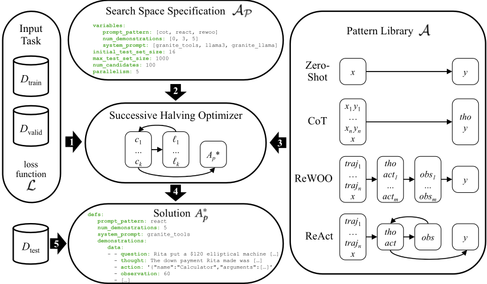
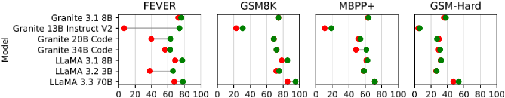
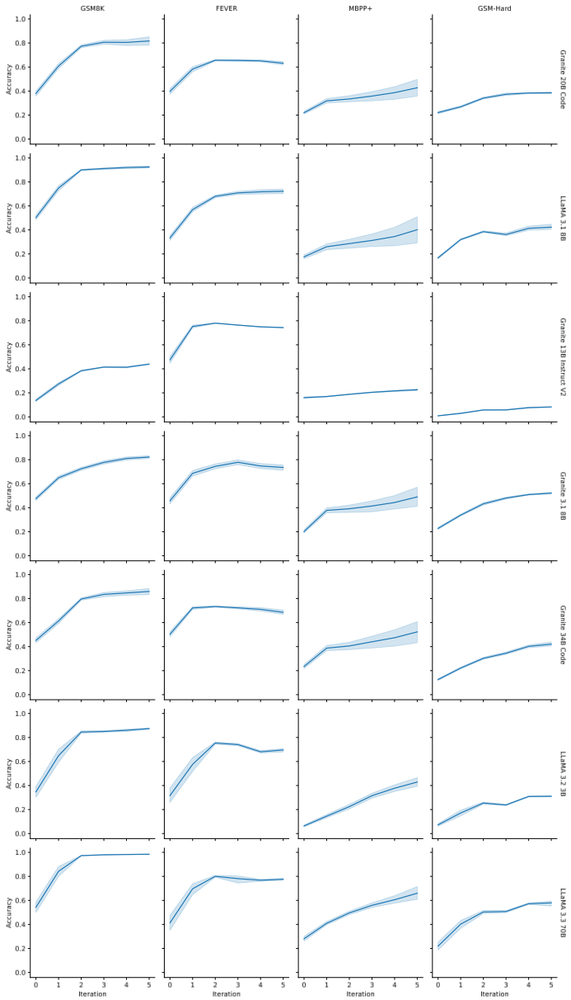

AutoPDL：面向 LLM Agent 的自动提示优化
LLM 应用的效果同时取决于高层提示模式（Zero-Shot、CoT、ReAct、ReWOO）与具体提示内容（指令、few-shot 示例），人工调优繁琐易错且换模型/换任务就要重来，而 DSPy 等现有提示优化器既不自动选择 agentic 模式、也不输出人类可读代码。AutoPDL 把"选模式+调提示"形式化为一个结构化 AutoML 问题，在 agentic 与非 agentic 模式及示例组成的组合空间上用 successive halving 高效搜索，并以 YAML 风格的 PDL 提示编程语言表达搜索空间与解，产出人类可读、可编辑、可直接执行的 PDL 程序，支持 source-to-source 优化与人在回路继续精调。在 FEVER、GSM8K/GSM-Hard、MBPP+ 三个任务、7 个 3B–70B 模型上，相对 zero-shot 平均提升 9.21±15.46 个百分点、最高 67.5pp，且发现最优提示策略随模型与任务变化、无普适最优模式；优化出的程序还能迁移到 GPT-4o-mini 并带来最高 13.1pp 提升。对团队而言，这是"自动提示优化 + Agent 模式自动选配"的直接工程参考。
给定任务数据集与损失函数，如何自动找到最优的"提示模式 A × 提示内容 p"组合（模式如 Zero-Shot、CoT、ReAct、ReWOO，内容包括指令与 few-shot 示例/轨迹）以最小化损失。人工提示工程繁琐、易错，且绑定特定 LLM 与任务，新模型出现就要重做；现有 Agent 框架（CrewAI、AutoGen）的提示深埋难改、模式固定为 ReAct 变体；现有提示优化器（DSPy 等）不自动选择提示模式，也不返回人类可读代码。
AutoPDL 将该问题形式化为结构化 AutoML：搜索空间为提示模式库（Zero-shot、CoT、ReWOO、ReAct 四个以 PDL 函数实现的模式）与提示优化变量（示例数量 num_demonstrations、从 D_train 采样的 few-shot 示例或轨迹、指令 instruction）的笛卡尔积；采用 successive halving 高效搜索——初始 100 个候选配置、在 16 条验证子集上评估，每轮保留损失最低的一半并加倍验证子集规模。搜索空间与最终解均用 YAML 风格的 PDL 提示编程语言表达，优化是 source-to-source 变换，产出可读、可编辑、可直接执行的 PDL 程序。agentic 模式按 JSON tool calling schema 调用工具（SymPy 计算器、Wikipedia 搜索、Python 代码执行、Finish），few-shot 轨迹用规则模板从训练集构造；另评估了跨数据集借用示例（GSM-Hard←GSM8K）与跨模型迁移（LLaMa 3.1 70B 优化结果迁移到 GPT-4o-mini）两种替代设置。
三个任务（FEVER、GSM8K/GSM-Hard、MBPP+）× 7 个 LLM（3B–70B）上，相对 zero-shot 基线平均准确率提升 9.21±15.46 个百分点，最高 67.5pp（Granite 13B Instruct V2 在 FEVER 上）
FEVER：最小提升 3.5pp（Granite 3.1 8B），最大 67.5pp；最优模式中 CoT 与 ReWOO 各占一半，ReAct 未在任何模型上成为最优；LLaMa 3.3 70B 用 3-shot ReWOO 提升 10.5pp
GSM8K：最高提升 9.9pp（LLaMa 3.3 70B，3-shot CoT），最低 3.5pp（LLaMa 3.2 3B）；ReAct/ReWOO 均非任何模型的最优；Granite 3.1 8B、Granite 20B Code、Granite 34B Code 未超过 zero-shot 基线
MBPP+：7 个模型中 3 个的最优模式为 ReAct（受益于执行反馈）；最高提升 12.6pp（Granite 34B Code），Granite 13B Instruct V2 提升 8.5pp；LLaMa 3.1 8B zero-shot 已达 61.2%，仍最高提升 6.2pp（平均 1.6pp）
跨数据集迁移：用 GSM8K 示例优化 GSM-Hard，LLaMa 3.3 70B 用 5-shot CoT 最高提升 6.5pp
跨模型迁移：LLaMa 3.1 70B 上优化出的 PDL 程序在 GPT-4o-mini 上，FEVER（3-shot CoT）至少提升 4pp、GSM-Hard（5-shot ReAct）提升 9.3pp、GSM8K（5-shot CoT）最高提升 13.1pp
优化设置：每实验初始 100 个候选配置、初始验证子集 16 条，successive halving 每轮保留损失最低的一半并加倍验证子集规模
相对已有工作的区别：与 DSPy/TextGrad 只优化指令与 few-shot、不自动选择 agentic 模式不同（且 DSPy 剥夺了程序员对最终提示文本的控制），与 APE/ZOPO 不优化 few-shot 示例不同，与 CEDAR/EASE 在推理时检索示例而非提前优化不同，与 EvoAgent/GPTSwarm 不优化单个 Agent 内部模式与 few-shot 样本不同，AutoPDL 把"提示模式选择 + 指令 + few-shot 示例/轨迹"统一为一个结构化 AutoML 组合搜索问题，借鉴 AutoML 中"算法选择+超参优化"（Auto-sklearn、DAUB、successive halving）的思路，并以 source-to-source 方式在 PDL 程序上优化，输出人类可读、可编辑、可直接执行的程序，从而支持人在回路精调与复用——这是 Lale 之外 AutoML source-to-source 思想在 agentic 模式与提示上的新应用。
相关度级别：high
命中能力域：3.2 提示工程 | 3.3 Agent 架构与工具使用 | 3.5 评测与可靠使用
理由：直接命中 3.2 提示工程：自动提示优化（模式、指令、few-shot 示例联合优化与 in-context learning）正是团队明确关注的核心技术，且论文开源了实现。同时命中 3.3：论文将 ReAct/ReWOO 等 Agent loop 模式与工具调用（计算器、搜索、代码执行）实现为 PDL 库函数并纳入联合搜索，属于单 Agent 执行模式选配与 harness 设计范畴。次要命中 3.5：successive halving 明确以节省算力为目标，source-to-source 优化支持人在回路精调，且跨 7 模型×4 数据集的实证结论（无普适最优提示策略）对团队建立"按模型/任务自动选配提示"的工程流程有直接指导意义。与 3.1（RAG/记忆）、3.4（多智能体）无实质关联。
建议动作：深入精读并做内部分享
arXiv:2504.04365v5 [cs.LG] 2025年11月3日
AutoPDL：面向 LLM 智能体的自动提示优化
Claudio Spiess 1 Mandana Vaziri 2 Louis Mandel 2 Martin Hirzel 2
1 加州大学戴维斯分校（UC Davis）
2 IBM 研究院（IBM Research）
大语言模型（LLM）的性能取决于对其提示的方式，相关选择既涵盖高层提示模式（如 Zero-Shot、思维链（CoT）、ReAct、ReWOO），也涵盖具体的提示内容（指令与少样本示例）。手动调整这种组合既繁琐又容易出错，且仅适用于特定的 LLM 和任务。因此，本文提出 AutoPDL，一种用于发现良好 LLM 智能体配置的自动化方法。我们的方法将此构建为一个结构化的自动机器学习（AutoML）问题，该问题定义在由智能体式与非智能体式提示模式及示例构成的组合空间之上，并利用 successive halving 高效地遍历该空间。我们引入了一个库，该库使用 PDL 提示编程语言实现了常见的提示模式。AutoPDL 的解是使用该库的、人类可读、可编辑且可执行的 PDL 程序。这种方法还支持源到源（source-to-source）优化，从而支持人在回路（human-in-the-loop）的细化与复用。在三项任务和七个 LLM（参数量从 3B 到 70B）上的评估显示，准确率获得了一致的提升（9.21 ± 15.46 个百分点），最高可达 67.5pp，并揭示出所选的提示策略因模型和任务而异。
大语言模型（Large Language Models, LLMs）及基于 LLM 的智能体（agent）在问答、数学应用题和编程等多种任务上表现出色。LLM 的性能在很大程度上取决于提示（prompt）的方式，而目前存在多种流行的提示模式（prompting pattern）。其中包括结合思维链（chain-of-thought, CoT）的零样本（zero-shot）或少样本（few-shot）提示（Brown et al. 2020）、零样本 CoT（Kojima et al. 2022），以及 ReAct（Yao et al. 2023）或 ReWOO（Xu et al. 2023）等智能体模式。然而，给定一个数据集 𝐷 test 和一个损失函数 L（例如错误率），并不清楚哪种模式会表现最好。此外，除了模式 𝐴 之外，性能还取决于提示 𝑝，包括少样本样本和指令。因此，问题在于找到模式与优化后提示的组合 𝐴 ∗ 𝑝，使 L 最小化。这通常通过手动提示工程（prompt engineering）完成，但这一过程十分繁琐，且每当出现新的 LLM 时都不得不重复进行。因此，本文探索如何利用自动化机器学习（automated machine learning, AutoML）来寻找 𝐴 ∗ 𝑝。而为了让用户能够信任结果或对其做进一步调整，𝐴 ∗ 𝑝 本身应当易于阅读和编辑。
诸如 CrewAI（Moura 2023）或 AutoGen（Q. Wu et al. 2023）等智能体框架包含预构建的智能体模式，其提示针对专有的前沿模型（frontier model）和常见任务进行了优化。遗憾的是，这些提示被深埋于代码之中（Schluntz et al. 2024），难以修改，也难以适配非前沿模型或新任务。此外，其提示模式被固定为 ReAct 的一种变体，限制了自定义提示结构的灵活性。诸如 DSPy（Khattab et al. 2024）等提示优化器会针对上下文学习（in-context learning, ICL）优化少样本样本和/或提示 𝑝 中的指令。遗憾的是，它们既不会自动选择提示模式 𝐴，也不会返回人类可读的代码。
我们通过定义并随后探索一个组合搜索空间，来形式化寻找良好模式及相应提示的问题。我们的灵感来自 AutoML 文献中关于机器学习算法及其超参数的组合搜索空间的研究（Thornton et al. 2013），不同之处在于：(i) 我们探索的不是离散或连续的超参数，而是文本形式的 ICL 样本、指令和提示模式；(ii) 我们处理的是生成式任务，而非分类或回归任务；(iii) 我们关注的是上下文学习，而非模型训练或微调。我们假设数据集包含验证集 𝐷 valid、测试集 𝐷 test，以及用于少样本样本的示例库 𝐷 train。𝐷 valid 在优化过程中用于评估某个配置的性能，而 𝐷 test 则在优化完成后仅使用一次，用于评估表现最佳的配置的性能。与通常做法一样，为避免过拟合，我们假设这三者彼此不相交。问题的表述是找到 𝐴 ∗ 𝑝 = argmin L ( 𝐴 𝑝 , 𝐷 valid )，其中：
本文的早期版本曾发表于 AutoML 2025。本版本补充了表 1 中缺失的标准差。
©2025 作者，以 CC BY 4.0 许可发布
𝐴
𝑝
∈
A
P
为了避免陷入局部极小值，同时节省计算量并找到损失较低的解，我们使用逐次减半（successive halving）(Jamieson et al. 2016) 来探索搜索空间 A P。为了使初始搜索空间 A P 对用户可解释，并使最终解 𝐴 ∗ 𝑝 既人类可读又可执行，我们用一种基于 YAML 的提示语言 PDL (Vaziri et al. 2024) 来表达它们。PDL 的结构化格式使得修改初始搜索空间和优化后的程序都变得容易，并确保最终解保持可直接执行。我们引入了一个 PDL 库，它实现了 A 中每一种常见的提示模式。初始搜索空间 A P 是一个 YAML 文件，其中包含供 AutoML 决策的多个选择点。而解 𝐴 ∗ 𝑝 则是一个针对给定任务（由数据集和损失函数给出）优化的定制 PDL 程序。开发者可以根据需要阅读甚至调整其中之一或两者。
我们在三项任务（问答、数学和编程）上评估我们的优化器，使用了七个参数量在 3B 到 70B 之间的 LLM。我们发现该优化器通常能带来 6-30% 范围内的准确率提升，某些情况下甚至更高。对于同一任务，不同的模式 𝐴 ∈ A 对不同模型表现最佳。反之，对于同一模型，不同的模式对不同任务表现最佳。除了所选模式 𝐴 的这种可变性之外，我们的实验还揭示了优化后的提示 𝑝 = ⟨ 𝑛, 𝑑 train , instr ⟩ 的可变性。我们还发现，当某项任务的训练数据缺失时，来自相关但不同数据集的数据也能有所帮助。此外，尽管我们的实验大多使用中等规模的开源模型，我们也展示了优化后的解同样能使前沿模型受益。
本文做出了三项主要贡献：
总体而言，本文展示了如何应用 AutoML 来自动发现针对给定任务优化的智能体式（agentic）或非智能体式（non-agentic）LLM 提示与模式。我们将 AutoPDL 的实现发布于 https://github.com/IBM/prompt-declaration-language，并向社区发布了本工作实验所用的复现包。
在第 9 行，一个 if 语句检查 LLM 的输出是否请求使用计算器工具。如果是，我们使用一个 Python 代码块来计算所请求的工具调用（第 11 行和第 12 行）。当我们使用 PDL 解释器执行该程序时，会得到所有的模型输入，接着是模型输出，最后是工具调用的输出。PDL 提供了丰富的控制结构，可用于编写各种提示模式，还提供了用于支持库的函数。例如，图 3 展示了第 4 行的一个函数调用。在本文中，我们考虑针对给定数据集自动调整提示并选择提示模式的问题。下一节将更详细地解释我们的方法。
Figure 2 gives an overview of our approach. Referring to the numbers in the arrows:
(1) The input task is given by two disjoint datasets 𝐷 train and 𝐷 valid and a loss function L . The datasets comprise ⟨ 𝑥,𝑦 ⟩ instances, where 𝑥 is a question, 𝑦 is the corresponding answer, and both are text strings. The loss function evaluates the quality of an answer 𝑦 . (2) The search space specification A P is a YAML file with the optimization variables and their possible values, along with some hyperparameters. For example, num_demonstrations: [0, 3, 5] indicates that each candidate will have zero, three, or five ICL samples randomly drawn from 𝐷 train . In the case of zero demonstrations, this is equivalent to the zero-shot baseline. If zero is an option, we bias our candidate sampling to always include one zero-shot candidate, just in case that baseline turns out to be the best-performing configuration.
1 https://github.com/BerriAI/litellm
2 PDL additionally makes use of the heuristic json-repair package.

(3) The pattern library consists of four PDL functions. Zero-shot is a baseline that simply prompts the LLM with 𝑥 and expects it to return 𝑦 . CoT refers to chain-of-thought (Wei et al. 2022) with in-context learning (Brown et al. 2020): the input includes a few 𝑥 𝑖 𝑦 𝑖 pairs before the actual question 𝑥 , and the output includes some reasoning thought tho before the actual answer 𝑦 . ReWOO (Xu et al. 2023) refers to reasoning without observations. Here, the few-shot samples are trajectories traj 𝑖 . A trajectory traj 𝑖 consists of steps for a particular example problem instance in 𝐷 train , e.g. , in the case of ReWOO, tho and act steps and their contents. In contrast to 𝑥 𝑖 𝑦 𝑖 pairs, traj 𝑖 may contain many tho , act and, depending on pattern, obs steps, before reaching the solution 𝑦 𝑖 . The first LLM call in ReWOO generates one reasoning thought tho and multiple actions act 𝑖 . The PDL code executes each of the actions as a tool call to obtain the corresponding observations obs 𝑖 . Afinal model call generates the answer 𝑦 based on the observations. Finally, the ReAct pattern (Yao et al. 2023) starts with few-shot trajectory examples traj 𝑖 (brief example visible under Solution 𝐴 ∗ 𝑝 in Figure 2) and the question 𝑥 , and then enters a TAO (thought, action, observation) loop. In each loop iteration, the LLM generates tho and act , then the PDL code executes the action as a tool call, and feeds the tool output back as an observation obs . Aspecial Finish action breaks out of the loop to return the answer 𝑦 .
一旦输入 (1)、(2) 和 (3) 就绪，逐次减半（successive halving）优化器便以循环方式运行。它以一个小的子集 𝐷 𝑣 ⊂ 𝐷 valid 以及从搜索空间中采样出的众多候选 C = { 𝑐 1 , . . . , 𝑐 𝑘 } ⊆ A P 开始。每次迭代使用 𝐷 𝑣 来评估相应的损失 ℓ 1 , . . . , ℓ 𝑘 。随后，每次迭代保留 L 最小的 𝑘 2 个候选，同时将验证子集 𝐷 𝑣 的大小加倍。算法参见 § 8.3。(4) 在最后一次迭代之后，剩余的最佳候选即为解 𝐴 ∗ 𝑝 。该解是一组 PDL 定义，其中为优化变量赋予了具体取值，
1 text: 2 - include: ../../tools.pdl 3 - include: ../../ReAct.pdl 4 - call: ${ react } 5 def: ANSWER 6 args: 7 task: "Question: ${ question }" 8 model: ${ model } 9 tools: ${ tools } 10 trajectories: ${ demonstrations } 11 - "\nThe answer is ${ ANSWER.answer }"
例如，在图 2 中，num_demonstrations: 5，而 demonstrations: ... 则是一个 ReAct 轨迹列表。(5) 该程序可用于测试集 𝐷 test 。举例来说，图 3 展示了对 ReAct 函数的一次调用，该调用将来自 𝐴 ∗ 𝑝 的 ${demonstrations} 作为参数传入。
本节介绍所使用的数据集、Agent 可用的工具，以及我们的实验设置，包括我们如何为每个数据集构建展示工具调用的 Agent 轨迹。
我们选取了在文献中被广泛使用、涵盖多种工具与领域、并且能够代表先前研究中经常研究的工具类别（例如计算器、搜索、代码执行）的数据集。在我们的实验中，每个数据集包含三个互不相交的划分：用于从中采样少样本（few-shot）样本的 𝐷 train、在优化过程中用于评估候选方案的 𝐷 valid，以及在优化完成后用于评估最终选定方案的 𝐷 test。
GSM8K。Grade School Math 数据集（Cobbe et al. 2021）包含 8,792 道小学数学题。我们从训练集中无放回地采样 1,024 道题作为 𝐷 valid 集，并从测试集（包含 1,319 个样本）中采样 1,024 道题作为 𝐷 test。这样剩余的 𝐷 train 包含 6,449 道题。每道题由一个应用题 𝑥（例如“48 的四分之一再加十五是多少？”）、一个推理步骤序列，以及跟在特殊分隔符之后的纯数字答案 𝑦 组成。对于思维链（CoT）提示模式，我们把这些推理步骤直接包含在示例（demonstrations）中。我们使用正则表达式从模型解答中提取数值答案，并将与真实答案（ground truth）完全匹配的解答定义为正确解答。
GSM-Hard。Gao et al. (2023) 提出了 GSM8K 的一个衍生数据集，其中变量被随机替换为大数，共包含 1,319 个样本。遗憾的是，GSM-Hard 中有 132 个样本的真实答案不正确，因此我们剔除了这些样本。我们将该单一数据集划分为大小相等的 𝐷 valid 和 𝐷 test（𝑛 = 594），并使用上文所述的 GSM8K 训练集（6,449 个样本）作为 𝐷 train（跨迁移，cross transfer）。我们采用与 GSM8K 相同的正确性判定标准。
FEVER。Fact Extraction and VERification 数据集（Thorne et al. 2018）是一个围绕事实核查构建的问答数据集。原始数据集包含 185,445 条声明（claim），这些声明为真、为假或无法验证，并且与人工标注的支持性、反驳性或中性句子及其来源的 Wikipedia 文章相关联。我们遵循该基准测试在 BIG-bench（Srivastava et al. 2023）中被广泛使用的衍生版本，该版本通过移除无法验证的声明，将其重新表述为一个真假判断任务。我们从训练集中采样 1,024 条声明作为 𝐷 valid，并从测试集中采样 1,024 条作为 𝐷 test。这样剩余的 𝐷 train 包含 5,696 条声明。BIG-bench 也不包含支持性或反驳性句子，我们通过在原始数据集上进行连接（join）来恢复这些句子，例如用作 CoT 示例。为了评估正确性，我们检查模型响应的最后一行中是否出现“true”和“false”。如果两者都不出现或同时出现，我们认为该响应不正确；否则，正确性即为与真实答案“true”或“false”的直接匹配。
MBPP+。MBPP（Austin et al. 2021）是一个包含 974 个大多为基础性 Python 问题的数据集，每个样本由一个自然语言问题描述 𝑥（对应一个自包含的 Python 函数 𝑦）以及一个测试用例组成。每个问题都有一组扩展的测试用例用于评估，这些测试用例不会展示给模型。Liu et al. (2023) 发现 MBPP 的测试用例并不完整，使得所提出的解法即使与问题描述不匹配也能通过并被判定为正确。因此，我们的实验基于 MBPP+，它包含原问题的一个子集，但为每个问题提供了更完整的测试用例集。我们使用这些测试用例来评估所提出解法的正确性。我们使用原始 MBPP 数据集中的 374 个样本作为 𝐷_train，并根据各样本在 MBPP 中所属的划分，将 MBPP+ 划分为 𝐷_test（224 个样本）和 𝐷_valid（39 个样本）。MBPP+ 样本数量之所以存在差异，是因为排除了 MBPP 训练集中出现的样本，以避免数据污染。我们的 ReAct 实现遵循 Wang et al. (2024)。我们没有实现 ReWOO，因为它不具备反应性（reactive），即无法纳入执行反馈。
我们的提示库将动作（即工具调用）表示为遵循 JSON 工具调用 schema（Abdelaziz et al. 2024）的形式。一个动作被表示为一个带有名称与参数映射的 JSON 对象。例如，{"action": "Calc", "arguments": {"expr": "48/4"}} 表示一次对计算器的调用，并附带待求值的表达式。实现各模式（pattern）的 PDL 函数（见图 2）接受一个工具定义列表作为参数。该列表中的每个元素本身也是一个 PDL 函数。由于 Agent 和工具都以 PDL 实现，给定任务的工具集合本身也可以被设为搜索空间的一个维度，我们将这一点留待未来工作。
Calculator. 对于数学数据集，我们让基于 Agent 的方法可以使用 Calc 工具。该工具使用 SymPy 对经过清理（例如将 ^ 替换为 ∗∗）的表达式进行求值并返回结果。出错时，该函数会返回一条表明表达式无效的警告，这有助于 Agent 从无效输入中恢复。
Search. 对于事实核查任务，我们提供对 Search 工具的访问，该工具返回针对查询的第一个维基百科搜索结果的摘要。如果未找到任何结果，则返回一条提示重试的信息；如果标题过于含糊，则返回一个可能的消歧义列表。
Execute. 我们为代码生成任务实现了一个编程 Agent，它可以执行由 XML 风格的 <execute> 标签包围的任意代码。该工具在 Python shell 中执行代码，并返回最终表达式的结果。这使得 Agent 能够在提交其解决方案之前，先针对给定的测试用例对其所提出的解决方案进行测试。
Finish. 最基本的动作是 Finish 动作，对于编程 Agent 而言则是 <solution> 标签。该动作会结束 Agent 的轨迹，并使 Agent 将该值作为解决方案返回。
我们通过针对每个模型与数据集对完整运行一次优化过程，随后比较任务准确率，来评估本方法的有效性。作为基线，我们在零样本（zero-shot）设置下对每个模型进行评估。该设置反映了用户或开发者付出最少努力的方式，即他们在查询或任务中不附带任何示例。由于我们所研究的模型均未经过专门训练以在零样本设置下生成 Agent 轨迹，因此在 ReAct 或 ReWOO 下构建零样本设置并不可行。
在优化过程中，我们在每个实验中使用了包含 100 个候选提示配置 𝑐 𝑖 = ⟨ 𝐴, 𝑝 ⟩ ∈ C 的初始候选集 C。我们将初始验证子集 𝑑 valid ⊆ 𝐷 valid 的大小固定为 16。对于给定的候选 𝑐 𝑖 ，我们定义 L ( 𝑐 𝑖 , 𝑑 valid ) = - Accuracy ( 𝑐 𝑖 , 𝑑 valid )，其中准确率是指按照数据集对正确性的定义，𝑐 𝑖 在 𝑑 valid 中正确解决的问题所占的比例。对于每个候选 𝑐 𝑖 ，𝑝 = ⟨ 𝑛, 𝑑 train , instr ⟩ ∈ P，其中 𝑛 个少样本（few-shot）样本或轨迹 𝑑 train ∈ ( 𝐷 train ) 𝑛 是以有放回的方式随机采样得到的。P 的可能取值数量在组合意义上极为庞大，且取决于所使用的数据集 𝐷 train 。最后，在优化过程完成后，最优候选将在 𝐷 𝑡𝑒𝑠𝑡 上进行评估。
轨迹构建（Constructing Trajectories）。由于我们还在 Agent 轨迹上进行优化，因此还需要一组轨迹，用于从中采样少样本样本。为此，我们遵循基于规则的变换，为每个训练样本 ⟨ 𝑥 𝑖 , 𝑦 𝑖 ⟩ 创建一条基础 Agent 轨迹 traj 𝑖 。我们为每个数据集设计并应用了一个模板，该模板相对简单，且易于在其他数据集上实现（细节见 § 8.5）。已有工作提出了自举（bootstrapping）轨迹的方法，例如在软件工程（Pan et al. 2024）、工具调用示例（Li et al. 2025）以及推理路径（Zelikman et al. 2022）等方面，这些方法均可应用于本问题。虽然我们承认手动构建模板存在不足，但我们认为该方法有两大优势：其一，模板可以混合搭配，因而具有可泛化性；其二，轨迹直接基于所使用的数据集。此外，我们希望使用覆盖多种工具和领域的常用数据集，而非包含轨迹或工具调用示例的新兴数据集。
6
模型。我们旨在研究能力各异的模型（例如自然语言或代码）、来自不同创建者的模型，以及不同规模的模型，参数量从个位数的十亿级别一直到接近消费级硬件可行极限的规模。我们的研究纳入了推理服务 IBM watsonx 3 上可用的七个模型。我们从开源且被广泛研究的 LLaMa 系列中选择了三个通用自然语言指令模型：Llama 3.1 8B、3.2 3B 和 3.3 70B（Dubey et al. 2024）。我们进一步从 Mishra et al. (2024) 中选择了三个模型，这些模型比 Dubey et al. (2024) 早约 3 个月。我们选择 Granite 13B Instruct V2 作为通用模型，选择 Granite 20B 和 34B Code Instruct 作为代码模型。我们还选择 Granite 3.1 8B 作为另一个通用模型（Granite Team 2024）。我们所有的实验均使用贪心解码（greedy decoding），即不进行采样，以限制超参数选择带来的影响。我们评估的模型数量受限于以 $/token 计的成本和执行时间。通过研究多种模型，我们展示了本方法的泛化能力。
替代实验设置。我们评估了两种替代实验设置。首先，为研究低资源场景，我们考察能否通过使用来自相似数据集的示例（demonstrations）𝐷 train 来提升某一数据集上的性能，同时针对 𝐷 valid 进行优化。在该实验中，我们考察能否通过使用来自 GSM8K 的示例来提升 GSM-Hard 上的性能，同时针对 GSM-Hard 的 𝐷 valid 进行优化。其次，为探索节省优化成本，我们评估一个模型优化后的提示程序能否良好地迁移到前沿模型上。其直觉在于：尽管该程序对前沿模型而言可能并非最佳，但至少能在基线之上带来一定提升。为此，我们针对每个数据集，在 OpenAI 的 gpt-4o-mini-2024-07-18 上评估 LLaMa 3.1 70B 优化后的 PDL 程序。
本节介绍我们为评估 AutoPDL 方法并回答以下研究问题而开展的实证研究的结果：
RQ 1：AutoPDL 能在多大程度上提升准确率？最优解在不同任务和模型之间的差异有多大？
RQ1 探究的是：在多种常用基准测试（benchmark）上，我们的 AutoPDL 方法能在多大程度上使模型性能超越其零样本（zero-shot）基线。我们还试图识别最优配置中可能存在的趋势，例如：少样本（few-shot）示例是否总是越多越好，或者某些提示模式是否特别适合某些问题领域。
RQ2：当某一给定任务缺少少样本示例库时，AutoPDL 能否通过复用来自相似任务的示例库来弥补？
RQ2 研究的是：在一个数据集上进行优化时，使用来自另一个相关数据集的演示（demonstrations），能否比不使用任何演示（零样本）取得更高的性能。该研究问题针对这样一种低资源场景：某个数据集中的演示池规模有限，而来自相似领域的另一个数据集则拥有庞大的演示池。
RQ 3：即使 AutoPDL 是针对开源模型进行优化的，其找到的解能否提升前沿模型（frontier model）的性能？
3 https://www.ibm.com/watsonx
7
针对商用前沿模型 API 运行优化的成本可能很高。RQ3 评估优化后的提示程序能否迁移到与其优化时所用的模型不同（且很可能更强）的模型上。
表 1 报告了我们优化与评估流程的结果。我们针对 FEVER、GSM8K 和 MBPP+ 各执行了三次完整的优化运行，并报告平均准确率、以百分点为单位的标准差（即绝对而非相对的不确定性），以及得分最高的运行所采用的模式。在各个模型和数据集上，我们总体上发现，采用少样本思维链（chain-of-thought, CoT）或智能体（agentic）模式 ReAct 或 ReWOO 时，性能较零样本基线有所提升。
| Dataset.Dataset | Model.Model | Accuracy.Zero-Shot | Accuracy.Optimized | Accuracy.Delta | Best Pattern.Best Pattern | Runtime.Runtime |
|---|---|---|---|---|---|---|
| Granite 3.1 8B | 72 . 9% | ( 76 . 4 ± 3 . 3 ) % | +3.5pp | ReWOO (5 shot) | 13:53 | |
| Granite 13B Instruct V2 | 6 . 5% | ( 74 . 0 ± 1 . 4 ) % | +67.5pp | ReWOO (3 shot) | 08:28 | |
| Granite 20B Code | 39 . 7% | ( 63 . 1 ± 1 . 6 ) % | +23.4pp | CoT (3 shot) | 12:03 | |
| FEVER Granite 34B Code | 56 . 4% | ( 62 . 6 ± 3 . 8 ) % | +6.2pp | CoT (3 shot) | 10:07 | |
| LLaMA 3.1 8B | 68 . 5% | ( 77 . 5 ± 0 . 8 ) % | +9.0pp | CoT (3 shot) | 05:06 | |
| LLaMA 3.2 3B | 38 . 0% | ( 66 . 3 ± 0 . 9 ) % | +28.3pp | ReWOO (5 shot) | 10:10 | |
| LLaMA 3.3 70B | 67 . 6% | ( 78 . 1 ± 0 . 6 ) % | +10.5pp | ReWOO (3 shot) | 21:27 | |
| Granite 3.1 8B | 74 . 2% | ( 74 . 2 ± 0 . 6 ) % | +0.0pp | Zero-Shot (Baseline) | 08:56 | |
| Granite 13B Instruct V2 | 23 . 0% | ( 30 . 9 ± 1 . 0 ) % | +7.9pp | CoT (3 shot) | 09:20 | |
| Granite 20B Code | 68 . 7% | ( 68 . 7 ± 0 . 1 ) % | +0.0pp | Zero-Shot (Baseline) | 09:27 | |
| GSM8K | Granite 34B Code | 72 . 1% | ( 72 . 1 ± 0 . 1 ) % | +0.0pp | Zero-Shot (Baseline) | 08:52 |
| GSM8K | LLaMA 3.1 8B | 78 . 4% | ( 85 . 3 ± 0 . 6 ) % | +6.9pp | CoT (5 shot) | 08:48 |
| GSM8K | LLaMA 3.2 3B | 71 . 8% | ( 75 . 3 ± 0 . 4 ) % | +3.5pp | CoT (3 shot) | 16:36 |
| GSM8K | LLaMA 3.3 70B | 85 . 5% | ( 95 . 4 ± 0 . 2 ) % | +9.9pp | CoT (3 shot) | 07:50 |
| Granite 3.1 8B | 62 . 9% | ( 62 . 9 ± 0 . 0 ) % | +0.0pp | Zero-Shot (Baseline) | 02:14 | |
| Granite 13B Instruct V2 | 10 . 7% | ( 19 . 2 ± 1 . 2 ) % | +8.5pp | ReAct (5 shot) | 04:02 | |
| Granite 20B Code | 51 . 8% | ( 51 . 8 ± 0 . 4 ) % | +0.0pp | Zero-Shot (Baseline) | 03:43 | |
| MBPP+ | Granite 34B Code | 48 . 7% | ( 61 . 3 ± 1 . 0 ) % | +12.6pp | ReAct (3 shot) | 04:54 |
| MBPP+ | LLaMA 3.1 8B | 61 . 2% | ( 62 . 8 ± 4 . 0 ) % | +1.6pp | ReAct (5 shot) | 01:45 |
| MBPP+ | LLaMA 3.2 3B | 58 . 0% | ( 58 . 0 ± 0 . 4 ) % | +0.0pp | Zero-Shot (Baseline) | 02:01 |
| MBPP+ | LLaMA 3.3 70B | 71 . 4% | ( 71 . 4 ± 0 . 0 ) % | +0.0pp | Zero-Shot (Baseline) | 02:27 |
| Dataset.Dataset | Model.Model | Accuracy.Zero-Shot | Accuracy.Optimized | Accuracy.Delta | Best Pattern.Best Pattern | Runtime.Runtime |
FEVER。我们观察到的最小提升出现在 Granite 3.1 8B 上，为 3.5 个百分点（pp），最大提升则为 Granite 13B Instruct V2 的 67.5pp。在提示模式方面，CoT 与 ReWOO 出现的频次相当。ReAct 在任何一个模型上都不是最优的。有趣的是，最大的模型（LLaMa 3.3 70B）借助 3-shot ReWOO 获得了 10.5pp 的提升。FEVER 的运行时间通常高于其他基准测试，这很可能是因为纳入 Wikipedia 内容而涉及大量 token。
GSM8K。记录到的最高提升（9.9pp）来自使用 3-shot CoT 的 LLaMa 3.3 70B，而最小提升 3.5pp 则出现在使用 3-shot CoT 的 LLaMa 3.2 3B 上。ReAct 和 ReWOO 在任何模型上都不是最优的。对于 Granite 3.1 8B、Granite 20B Code 和 Granite 34B Code，未发现相对零样本基线的提升。这一结果有些令人意外，因为通常情况下，即使只加入少量 few-shot 样本，也能提升大语言模型（LLM）的性能。
MBPP+。多个模型从执行反馈中受益，7 个模型中有 3 个以 ReAct 作为最优提示模式（如 § 4.3 所述，ReWOO 已被排除）。最大提升为 12.6pp，出现在 Granite 34B Code 上；Granite 13B Instruct V2 提升了 8.5pp，这可能是由于其作为通用型、非代码模型编程性能较差所致。相比之下，较小的 LLaMa 3.1 8B 模型零样本（zero-shot）性能已高达 61.2%，但使用 ReAct 后仍获得了最高 6.2pp（平均 1.6pp）的提升。在 Granite 3.1 8B、Granite 20B Code 以及其他 LLaMa 模型上未观察到提升。
8
| Dataset.Dataset | Model.Model | Accuracy.Zero-Shot | Accuracy.Optimized | Accuracy.Delta | Best Pattern.Best Pattern | Runtime.Runtime |
|---|---|---|---|---|---|---|
| GSM-Hard | Granite 3.1 8B | 36 . 0% | ( 37 . 8 ± 0 . 8 ) % | +1.8pp | ReAct (5 shot, Granite Tools) | 23:34 |
| GSM-Hard | Granite 13B Instruct V2 | 4 . 4% | ( 6 . 2 ± 0 . 7 ) % | +1.8pp | CoT (5 shot) | 10:26 |
| GSM-Hard | Granite 20B Code | 28 . 8% | ( 27 . 2 ± 4 . 5 ) % | +0.0pp | Zero-Shot (Baseline) | 11:14 |
| GSM-Hard | Granite 34B Code | 27 . 9% | ( 31 . 0 ± 0 . 9 ) % | +3.0pp | CoT (3 shot) | 10:20 |
| GSM-Hard | LLaMA 3.2 3B | 26 . 3% | ( 26 . 8 ± 0 . 6 ) % | +0.5pp | CoT (5 shot) | 17:08 |
| GSM-Hard | LLaMA 3.3 70B | 47 . 3% | ( 53 . 8 ± 0 . 4 ) % | +6.5pp | CoT (5 shot) | 11:03 |
| Dataset.Dataset | Model.Model | Accuracy.Zero-Shot | Accuracy.Optimized | Accuracy.Delta | Best Pattern.Best Pattern | Runtime.Runtime |
| Dataset. | Model. | Accuracy.Zero-Shot | Accuracy.Optimized | Accuracy.Delta | Best Pattern. |
|---|---|---|---|---|---|
| FEVER | GPT-4o-mini | 83 . 7% | 87 . 7% | +4.0pp | CoT (3 shot) |
| GSM-Hard | GPT-4o-mini | 45 . 6% | 54 . 9% | +9.3pp | ReAct (5 shot, Granite LLaMa) |
| GSM8K | GPT-4o-mini | 77 . 8% | 90 . 9% | +13.1pp | CoT (5 shot) |
| MBPP+ | GPT-4o-mini | 72 . 3% | 72 . 3% | +0.0pp | Zero-Shot (Baseline) |
| Dataset. | Model. | Accuracy.Zero-Shot | Accuracy.Optimized | Accuracy.Delta | Best Pattern. |
缺少少样本示例库。我们使用 GSM8K 示例针对 GSM-Hard 对 PDL 程序进行了三次优化，并在表 2 中报告结果。我们发现，在大多数情况下，GSM8K 示例对模型在 GSM-Hard 上的表现至少是无害的，其中 LLaMa 3.3 70B 使用 5-shot 思维链（CoT）时提升最高达 6.5pp。
商用前沿模型。为评估在一个模型上获得的性能提升能否在另一个模型上实现，我们在 OpenAI 的 gpt-4o-mini-2024-07-18 上评估了 LLaMa 3.1 70B 优化后的 PDL 程序，并在表 3 中报告结果（我们在此未使用 LLaMa 3.3 70B，因为该实验是我们更早时完成的，没有时间和资源为本文的最终版本重复该实验）。对于所有使 LLaMa 3.1 70B 获得提升的数据集/提示模式对，我们发现 GPT4o-mini 上也出现了令人惊讶的提升：使用 3-shot CoT 在 FEVER 上至少提升 4pp；使用 5-shot ReAct（Granite LLaMa 指令）在 GSM-Hard（使用 GSM8K 示例）上提升 9.3pp；使用 5-shot CoT 在 GSM8K 上最高提升 13.1pp。这表明针对开源模型进行优化也能使闭源模型受益。
另一个与之密切相关的研究领域是自动机器学习（AutoML）。Auto-sklearn (Feurer et al. 2015) 使用贝叶斯优化来同时执行 scikit-learn 流水线 (Buitinck et al. 2013) 的算法选择与超参数选择。尽管存在差异，我们认为算法与智能体模式之间、以及超参数与少样本示例之间存在某种类比。DAUB 先在少量数据上评估众多候选模型，然后逐步减少候选数量并增加数据量，最终挑选出一个强大的模型 (Sabharwal et al. 2016)。连续减半（successive-halving）算法采用了类似的方法 (Jamieson et al. 2016)。我们的方法正是受到同样的增量式数据分配思想的启发。尽管随机搜索和贝叶斯优化在 AutoML 中都很流行，但也存在一些更为复杂的方法。例如，TPOT 使用遗传算法 (Olson et al. 2016)，而 AlphaD3M 使用蒙特卡洛树搜索 (Drori et al. 2018)。我们选择从一种更简单的技术入手，这种技术对优化空间的良好性质依赖较少。尽管如此，对 AutoPDL 而言，探索更先进的 AutoML 优化器可能是一项富有成果的未来工作。Lale (Baudart et al. 2021) 将 AutoML 视为一种源到源（source-to-source）优化，与本文类似，但与 AutoPDL 不同的是，它尚未被用于优化智能体模式或提示。
我们提出了 AutoPDL 方法，用于联合优化面向大型语言模型（LLM）的提示模式与文本提示，以应对手动提示工程所带来的挑战。通过将该优化表述为对智能体（agentic）与非智能体（non-agentic）模式、并结合指令与少样本（few-shot）样本的离散搜索，我们利用逐次减半（successive halving）技术高效地遍历了这一搜索空间。我们在多个数据集（FEVER、GSM8K、GSM-Hard 和 MBPP+）以及多个模型（来自 LLaMA、Granite 和 GPT 系列）上的评估表明，准确率获得了显著提升，最高可达 67.5 个百分点，并证实了没有任何单一提示策略能够在所有任务和模型上普遍优于其他策略。此外，以基于 YAML 的提示编程语言（PDL）生成代码，使其可执行、易于修改且便于人类阅读，从而支持实际采用与适配。
10
1 defs: 2 prompt_pattern: cot 3 num_demonstrations: 2 4 demonstrations: 5 data: 6 - question: Tricia is a third of Amilia's age and Amilia is a quarter of Yorick's age. Yorick is twice 7 Eugene's age and Khloe is a third of Eugene's age. Rupert is 10 years older than Khloe but 2 years 8 younger than Vincent who is 22 years old. How old, in years, is Tricia? 9 reasoning: |- 10 Rupert is younger than Vincent by 2 years, so he is 22 years old - 2 years = <<22-2=20>>20 years old. 11 Khloe is 10 years younger than Rupert so she is 20 years old - 10 years = 10 years old. 12 Eugene is 3 times older than Khloe so he is 10 years old * 3 = <<10*3=30>>30 years old. 13 Yorick is twice Eugene's age so he is 30 years old * 2 = <<30*2=60>>60 years old. 14 Amilia is a quarter of Yorick's age so she is 60 years old / 4 = <<60/4=15>>15 years old. 15 Tricia is a third of Amilia's age so she is 15 years old / 3 = <<15/3=5>>5 years old. 16 answer: '5' 17 - question: Emmalyn decided to paint fences in her neighborhood for twenty cents per meter. If there were 18 50 fences in the neighborhood that she had to paint and each fence was 500 meters long, calculate 19 the total amount she earned from painting the fences. 20 reasoning: |- 21 The total length for the fifty fences is 50*500 = <<50*500=25000>>25000 meters. 22 If Emmalyn charged twenty cents to paint a meter of a fence, the total income she got from painting 23 the fences is $0.20*25000 =$5000 24 answer: '5000' 25 instruction: Answer the questions to the best of your abilities. 26 text: 27 - include: CoT.pdl 28 - "${ instruction }\n\n" 29 - call: ${ chain_of_thought } 30 args: 31 examples: ${ demonstrations } 32 question: ${ question } 33 model: ${ model }
1 description: tool use 2 defs: 3 tools: 4 data: 5 - name: calc 6 description: Calculator function 7 arguments: 8 expr: 9 type: string 10 description: Arithmetic expression to calculate 11 text: 12 - role: system 13 text: You are Granite, developed by IBM. You are a helpful AI assistant 14 with access to the following tools. When a tool is required to answer 15 the user's query, respond with <|tool_call|> followed by a JSON list of 16 tools used. If a tool does not exist in the provided list of tools, 17 notify the user that you do not have the ability to fulfill the request. 18 contribute: [context] 19 - role: tools 20 text: ${ tools } 21 contribute: [context] 22 - "Out of 1400 participants, 400 passed the test. What percentage is that?\n" 23 - def: actions 24 model: replicate/ibm-granite/granite-3.1-8b-instruct 25 parser: json 26 spec: [{ name: str, arguments: { expr: str }}] 27 - "\n" 28 - i f : ${ actions[0].name == "calc" } 29 then: 30 lang: python 31 code: result = ${ actions[0].arguments.expr }
参见图 A3。
搜索空间是以下离散变量的笛卡尔积，每个变量在每个候选中取一个值：
为了在智能体模式（agentic patterns）和轨迹上进行优化，我们需要一组在优化过程中使用的示例轨迹。为此，我们按照下文概述的基于规则的转换方式，为每个训练样本 ⟨ 𝑥 𝑖 , 𝑦 𝑖 ⟩ 创建一条基础智能体轨迹 traj 𝑖。
GSM8K。为了在 ReAct 中演示工具调用，我们改为按如下方式推导轨迹 traj。我们利用“每个推理步骤至多包含一个表达式”这一事实，逐个遍历各步骤。在每一步，我们向轨迹追加一个“思考”（thought），其内容为数学表达式之前的文本，并拼接上反思语句"I need to calculate"。然后追加一个携带该表达式的 calculator 工具调用，以及一个“观察”（observation），即该表达式的结果。最后，我们追加一条思考"The answer is ..."，其中包含真实答案，随后是携带该答案的 finish 动作。我们采用相同的流程来创建 ReWOO 轨迹，只是措辞略有不同，例如用"Calculate xyz"替代"I need to calculate xyz"，并省略最后的思考和动作。此外，我们使用字符串替换，将轨迹中任何被假定的表达式结果替换为相应的变量。
FEVER。为了生成智能体轨迹，我们遍历与某条声明（claim）相关联的每一篇文章，追加一条思考"I need to search for ..."，随后是动作、一个包含文章摘要的观察，最后追加一条包含与该声明相关的该篇文章中所有相关句子的思考；我们对与该声明相关联的每一篇文章重复上述过程。这一流程并不理想，因为文章或句子本身并不存在固有的顺序，尽管按照标注者在 Wikipedia 上的浏览路径可能存在某种自然顺序。最后，我们追加一条思考"The claim is true/false"以及 finish 动作，二者均带有真实答案。对于思维链（chain-of-thought, CoT），我们执行相同的流程，只是由于不涉及工具调用，我们仅包含拼接后的证据句子。
17
MBPP+。为了从训练集中生成示例智能体轨迹，我们遵循 Wang et al. (2024) 的智能体模式（无反馈）上下文示例（in-context examples），其组成为：问题 𝑥、一条诸如"The intersection is elements that are in both lists"的思考、一个 execute 动作，该动作包含所提出的代码以及一个断言，该断言使用提示中的测试用例输入调用所提出的方法并比较其输出。随后是一个包含执行结果的观察，即"[Executed Successfully with No Output]"或堆栈回溯。这使得智能体能够对解进行迭代（在我们的实现中最多迭代五次）。我们使用包含 374 个问题的完整 MBPP 训练集作为 𝐷 train，并根据问题 id 是否属于 MBPP，将 MBPP+ 数据集划分为 𝐷 valid 和 𝐷 test，分别得到 39 个验证问题和 224 个测试问题。
为了从训练集生成合成轨迹，我们从自然语言规范和单个测试用例（即提示）出发，追加思维 'I should run a solution on the test case before proposing a solution.'，随后追加真实解（ground truth solution），并按照模式 [solution]res = ...; assert res == ..., 'Expected ... but got '.format(res) 将提示中的测试用例代入其中。接着，我们追加观测 '[Executed Successfully with No Output]'、思维 'There is no more AssertionError. I can now submit the solution.'，最后追加包含真实解的求解动作。这种朴素的方法使我们能够提供演示轨迹，尽管这些轨迹较为简单，其假设第一个解就是正确的。从强模型中采样反思或思维可能是有益的（Li et al. 2025），但我们将轨迹限制为基于规则的变换。由于 ReWOO 不是反应式的（reactive），即不利用执行反馈，因此它在 MBPP 上并无意义。故我们将其排除在实验之外。

在图 A5 中，我们对表 1 和表 2 中的结果进行了可视化展示。
18
在图 A6 中，我们可视化了各候选的准确率随优化过程迭代次数的变化情况，其中包括一个用于刻画候选之间准确率离散程度的 95% 置信区间。该置信区间使用均值和 1,000 次 bootstrap 计算得到。随着迭代次数的增加，候选的数量减少，而验证集 𝐷 𝑣 的规模增大。
19
